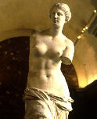
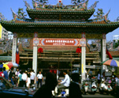

呂清夫 撰文

一個城市跟一個人一樣，各有自己的資質，自己的性格，並有不同的際遇，不同的成就。台北已經是個國際的大城，諸般建設都很積極，這時找個世界最美的城市來比一比，應該不無攻錯的意義。我們若把台北跟巴黎放在一起，雖然十分對比，但也不無類似之處。例如為了去除歷史的陰霾，巴黎闢有個壯麗的「協和廣場」。協和廣場原是法國大革命的重要舞台之一，法國皇帝皇妃都在這裡走上了斷頭台，其後也遭逢多次的政變，名稱屢經更迭。如今改名為「協和」，並在中央樹立一根方尖碑，可以說是超大型的西式墓碑，這是來自埃及的贈品，已有三千多年的歷史。方尖碑的兩旁各有一個大噴泉，中央有個八角形的大水池，周圍環列以象徵里昂、馬賽、波爾多等法國八大城市的雕像，池中水花紛飛，夜間一片燈海。
為了撫平昔日的傷痛，台北也有個「和平公園」，因為它是當年二二八事件的發生地點之一，因之把原先的新公園改名為「和平公園」。日據時代公園中央立有兒玉總督的雕像，現在改立二二八紀念碑，主要由數個黑色立方體所構成，氣氛相當肅穆。從一九二一年的一張照片看來，和平公園似乎有點像凡爾賽，整個公園是歐風的，在幾何形態的布局之下，林中隱約可見大型的噴泉、音樂台、歐式的涼亭、規則的小徑，並在一片蒼翠之中，凸出那座白色的博物館。光復以後，不少設施被拆毀，博物館後方則增建一座大水池，周圍繞以五個鮮豔的中式涼亭，涼亭中立有孫中山等人的銅像。不過整個看來，實在與原先的公園格格不入，也凸顯了政權更迭的矛盾或中西文化的衝突。巴黎有一座羅浮宮，收藏藝術品二十萬餘件，包括蒙娜麗莎、維納斯像等精品。台北也有一座故宮，收藏文物六十四萬件，讓你一輩子都看不完，且精品亦多，過去便有文物學者說，故宮的毛公鼎可以比美羅浮宮的維納斯。羅浮宮其實就是法國的故宮，連建築物都不例外，改成博物館可以說煞費苦心，維納斯像所放置的圓形空間原來竟是路易十四皇太后的澡堂，但被改裝得不著痕跡，可以說是古蹟再利用的典範。巴黎有一座聖母院，台北有一座龍山寺，都是香火鼎盛，遊客不絕。聖母院其實等於我們的媽祖廟，只是他們有大作家雨果注意到傳統建築，同時寫成那本著名的「鐘樓怪人」，除了故事引人之外，也促成大家注意這個古蹟的修復。巴黎之夜不但有美麗的街燈，更重要的是每一座建築物都用燈光把自己照得金光璨爛，聖母院等古蹟都便成了黃金打造的一般。去年台北都發局也開始推出「建築夜間金獎」，結果選出震旦行大樓等十棟台北最閃亮的建築。巴黎塞納河上的每一座橋都經過精心打造，台北基隆河的中山橋，也終於因為它的美而被保存下來，不必再為水患背黑鍋。法國的鈔票竟然印的是畫家、音樂家的肖像與作品，最近台幣改版，也有人作類似的建議，雖然沒有成功，但是明年起千元大鈔則改用小學生於正面，並用帝雉於背面。在巴黎不但狗有「狗權」，同時還有一種清潔車是專掃狗糞的，在處處「黃金」的台北則還看不到，其實台北欠缺的東西還很多，灰姑娘如要變成富家女，自然還有一段很長的路要走，重要的是已經起步了。圖一︰羅浮宮的維納斯像，其展出空間原來竟是路易十四皇太后的澡堂圖二 ︰台北龍山寺